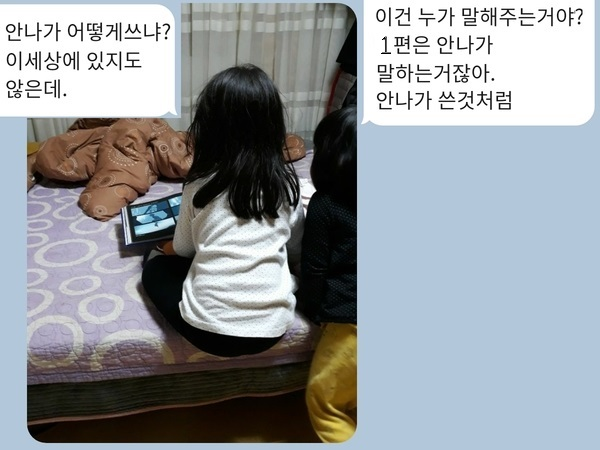

서술자 이야기
화자, 서술자, 시점 수업을 시작하며
엄마한테서 카톡이 왔습니다
겨울왕국2 영화를 책으로 꾸민 책을 보다가 동생과 언니가 대화한 내용이 재밌어서 저한테 사진 찍어서 보내준 겁니다. 동생이 묻습니다.
"이건(겨울왕궁2 책) 누가 말해주는 거야? 일편은 안나가 말해주는 거잖아."
언니가 대답합니다.
"안나가 어떻게 쓰냐? 이 세상에 있지도 않은데."

책을 보니까 진짜 그렇습니다. 어찌된 일인지 겨울왕국1은 책이 "안나"의 1인칭 시점으로 서술되어 있습니다. "안나"가 보지 않는 곳에서 "엘사"에게 벌어진 일은 서술되어 있지 않습니다.
그리고 예상대로 겨울왕국2 책은 "전지적작가시점"으로 되어 있습니다.
올해 중2 학생들에게 '화자', '서술자', '시점'을 가르치게 되어 있는데, 우리집 동생(4살여아)의 의문이 중2 학생들에게 던질 근원적인 질문과 꼭 같다는 생각이 드네요. 화자 수업은 원래 가지고 있던 아래 자료를 재구성해서 쓰려고 계획했으나, 새로운 자료를 좀 더 모아봐야겠다는 생각이 드네요. 수업자료는 늘 무궁무진하네요. 역시 수업 자료를 찾고, 만드는 일은 정말 재미있습니다.
- http://jangi.net/RG/rg4_board/view.php?&bbs_code=free&bd_num=65
- http://jangi.net/RG/rg4_board/view.php?&bbs_code=free&bd_num=66
- http://jangi.net/RG/rg4_board/view.php?&bbs_code=free&bd_num=78
- http://jangi.net/RG/rg4_board/view.php?&bbs_code=free&bd_num=150
- http://jangi.net/RG/rg4_board/view.php?&bbs_code=free&bd_num=435